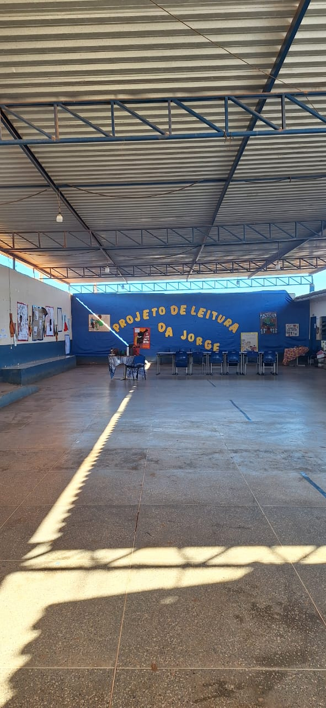
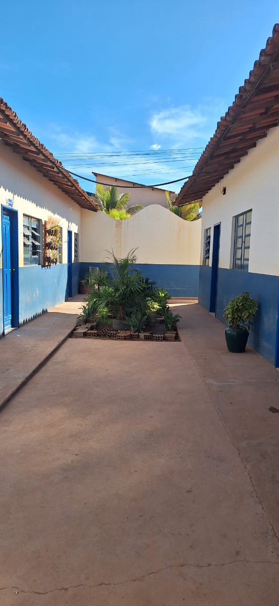
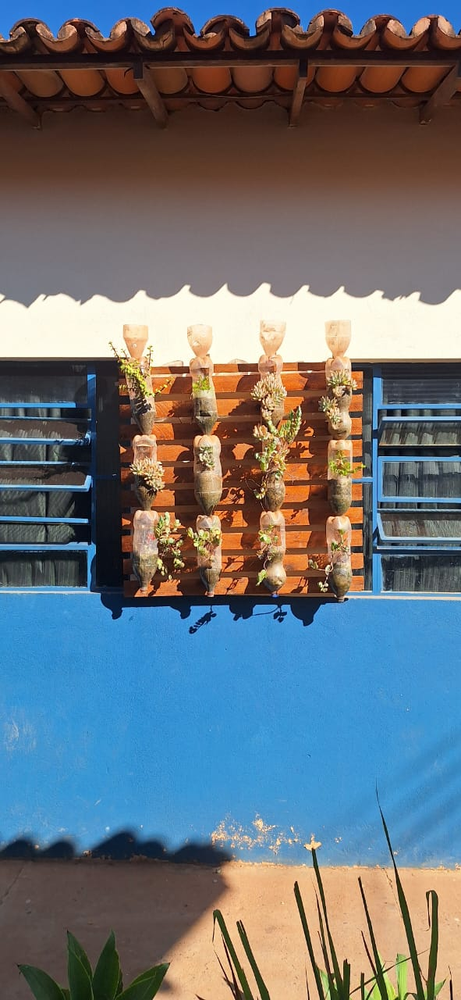
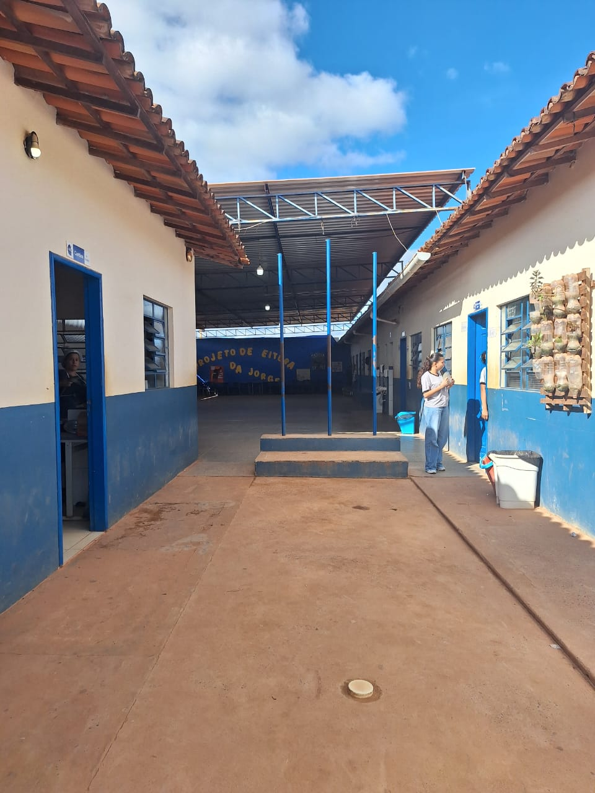

Conheça Nossos Ambientes
No Colégio Jorge Amado, cada espaço é pensado para o bem-estar, aprendizado e desenvolvimento dos nossos alunos. Veja abaixo alguns dos nossos principais ambientes.
Pátio Coberto Principal
Nosso amplo pátio coberto é o coração da escola, um espaço multifuncional utilizado para recreação, lanches, eventos culturais, apresentações e projetos como o nosso "Projeto de Leitura da Jorge". É um local de convivência e aprendizado constante.
Corredores de Acesso e Convivência
Corredores abertos e arborizados que conectam as salas de aula e demais dependências da escola. São espaços que promovem a circulação e também o encontro entre alunos e professores, com um ambiente tranquilo e agradável.
Jardins Verticais e Detalhes que Inspiram
Acreditamos na importância do contato com a natureza. Nossos jardins verticais, criados com materiais reutilizados, não só embelezam o ambiente, mas também servem como ferramenta pedagógica, ensinando sobre sustentabilidade, cuidado e o ciclo da vida.
Mastro da Bandeira
Aqui você pode encontrar o mastro onde asteamos a bandeira do brasil e da bahi,juntamente com o corredor de acesso as salas de aula.